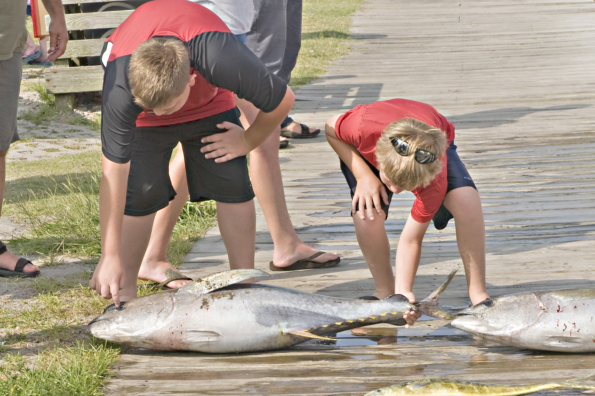

Oregon Inlet Fishing Center, Outer Banks, NC

It was customary to travel to the Oregon Inlet Fishing Center at the southern part of Nags Head, NC to watch the fishing boats come in. The boys were always intrigued with the different kinds and size of fish. Cameron is trying the old "Finger in the Eye" test to see if the fish is really dead. Matthew decided to work on the tail.